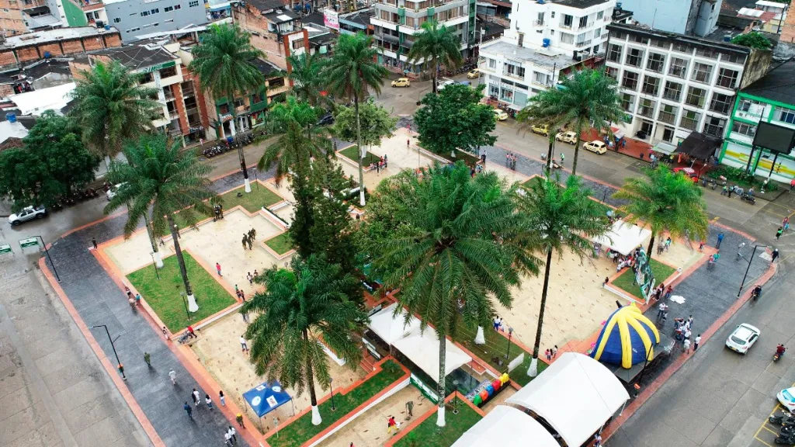
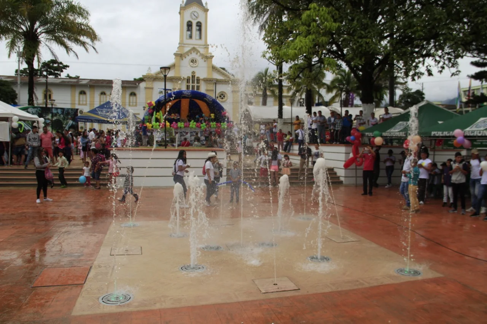

Sobre la experiencia
Conoce el lugar
El Parque General Santander se encuentra en el corazón de Mocoa y constituye uno de los principales espacios de encuentro del municipio. Su ubicación permite observar parte de la dinámica cotidiana de la ciudad y acercarse a diferentes actividades comerciales, culturales y sociales.
Recorrer el parque también permite comenzar una visita por el centro de Mocoa y conocer otros lugares representativos ubicados en sus alrededores. Es un punto de referencia para comprender la vida urbana y la identidad local.


Información para visitantes.